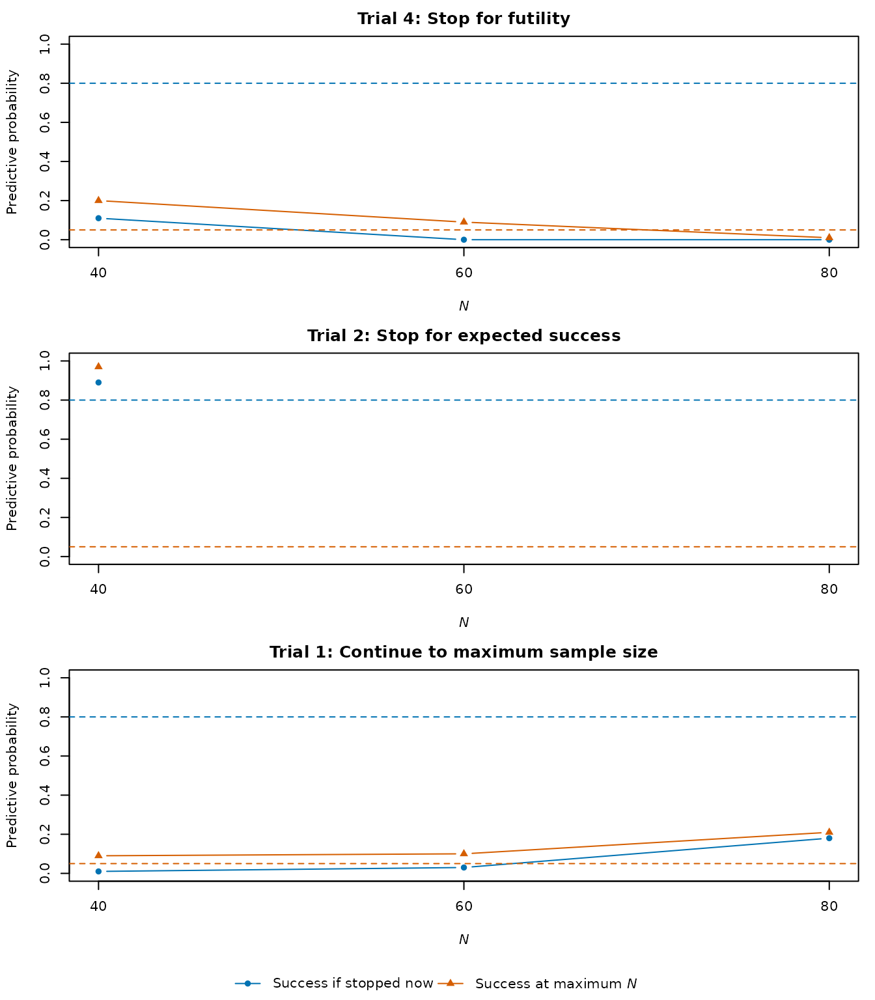

Calibrating stopping rules from complete trial paths
Graeme L. Hickey
Source:vignettes/calibrating-stopping-rules.Rmd
calibrating-stopping-rules.RmdCalibrating a stopping rule usually involves comparing several
combinations of thresholds. Repeating the simulation for each
combination can be slow, as much of the work involves the same
predictive imputation and analysis. sim_trial_paths()
performs these calculations once at every planned look.
apply_stopping_rules() then applies different
Fn, Sn, Qn, and
prob_ha values to the saved trial paths.
Each set of trial paths represents one data-generating scenario and
analysis specification. The null and alternative therefore require
separate simulations. Changes to the priors, analysis method, endpoint
horizon, allocation, maximum sample size, look schedule, or Monte Carlo
settings used in the calculations also require new paths.
sim_trials() remains useful when evaluating an individual
design.
For a design whose endpoint changes according to a prespecified
interim schedule, see Extending
an endpoint from 12 to 18 months. That workflow uses
sim_horizon_paths() to retain multiple endpoint horizons
and apply_horizon_rules() to compare candidate
schedules.
What is saved
At each interim look, sim_trial_paths() saves the
success score from every predictive completion of the currently enrolled
cohort and the maximum cohort. A score is a posterior probability for a
Bayesian analysis or 1-p for a
frequentist analysis. For a completed-data threshold c, the predictive probability is
\widehat P(c) = \frac{1}{M}\sum_{m=1}^{M} I(s_m > c),
where M is N_impute.
Saving the individual scores allows the predictive probability to be
recalculated for any prob_ha. Saving only the predictive
probability at one threshold would not be sufficient.
The paths also include a final analysis and calendar-time measures for each possible stopping cohort. If accrual stops at 60 participants for expected success, the final result comes from those 60 participants after follow-up. The final result for the maximum cohort is used for trials that continue to maximum N and for the counterfactual comparison described below.
Interim predictions use only the data available at that calendar
date. The eventual outcomes used in the cohort final analyses are not
available to these predictions. Dropout and final imputation follow the
same rules as survival_adapt().
Simulate null and alternative trial paths
The example has interim enrollment looks at 40, 60, and 80 participants, followed by a final analysis at a maximum N of 100. Accrual is six participants per month, follow-up is 12 months, allocation is equal, and there is no dropout. The control event risk is 30% at 12 months; the alternative treatment risk is 20%. The primary analysis compares the treatment-minus-control event risk using a Bayesian beta-binomial model, with a uniform Beta(1, 1) prior in each arm and numerical quadrature. Predictive imputation uses a constant-hazard model with independent Gamma(0.1, 0.1) priors, specified as shape and rate, in each arm.
We simulate 1,000 trials under each scenario, with 100 predictive imputations at each look. These counts provide a useful illustration of the differences between rules, although a larger simulation would be needed to assess type I error precisely.
fixed_design <- list(
hazard_control = prop_to_haz(0.30, endtime = 12),
N_total = 100,
interim_look = c(40, 60, 80),
lambda = 6,
end_of_study = 12,
prior_surv = c(0.1, 0.1),
prior_surv_final = c(0.1, 0.1),
block = 2,
rand_ratio = c(control = 1, treatment = 1),
prop_loss = c(control = 0, treatment = 0),
alternative = "less",
h0 = 0,
method = "bayes-bin",
prior_bin = c(1, 1),
bin_method = "quadrature",
imputed_final = FALSE,
N_impute = 100,
N_trials = 1000,
ncores = 1,
backend = "sequential"
)
null_args <- c(fixed_design, list(
hazard_treatment = prop_to_haz(0.30, endtime = 12), seed = 8201
))
alternative_args <- c(fixed_design, list(
hazard_treatment = prop_to_haz(0.20, endtime = 12), seed = 8202
))
paths <- list(
null = do.call(sim_trial_paths, null_args),
alternative = do.call(sim_trial_paths, alternative_args)
)
paths$null
#> Goldilocks trial paths
#> 1000 trials; 3 interim looks; maximum N = 100
#> Failed calculations: 0
#> Memory: 34.2 MbN_mcmc is omitted because quadrature does not use
posterior draws. N_impute affects the stopping decisions
and should be kept fixed when comparing rules and validating a selected
design. Increasing N_trials improves the precision of the
operating-characteristic estimates without changing the decision
algorithm.
Evaluate candidate rules
The grid below varies the futility threshold Fn, the
expected-success threshold Sn, and the completed-data
threshold prob_ha. Immediate success is disabled with
Qn = 1. Each scalar threshold applies at every look; a
vector of length three would specify a different boundary at each
interim analysis.
grid <- expand.grid(
Fn = c(0.05, 0.15),
Sn = c(0.80, 0.95),
Qn = 1,
prob_ha = c(0.95, 0.975)
)
rules <- lapply(seq_len(nrow(grid)), function(i) as.list(grid[i, ]))
names(rules) <- paste0("rule_", seq_along(rules))
results <- lapply(paths, function(scenario_paths) {
lapply(rules, function(rule) {
do.call(apply_stopping_rules, c(list(paths = scenario_paths), rule))
})
})
null_summary <- summarise_sims(results$null)
alternative_summary <- summarise_sims(results$alternative)
knitr::kable(cbind(candidate = names(rules), grid), digits = 3)| candidate | Fn | Sn | Qn | prob_ha |
|---|---|---|---|---|
| rule_1 | 0.05 | 0.80 | 1 | 0.950 |
| rule_2 | 0.15 | 0.80 | 1 | 0.950 |
| rule_3 | 0.05 | 0.95 | 1 | 0.950 |
| rule_4 | 0.15 | 0.95 | 1 | 0.950 |
| rule_5 | 0.05 | 0.80 | 1 | 0.975 |
| rule_6 | 0.15 | 0.80 | 1 | 0.975 |
| rule_7 | 0.05 | 0.95 | 1 | 0.975 |
| rule_8 | 0.15 | 0.95 | 1 | 0.975 |
The first stopping decision ends accrual. If more than one boundary is crossed, immediate success takes precedence over expected success, and either success decision takes precedence over futility. Expected success still requires a final analysis of the enrolled cohort after follow-up. Binding futility is an unsuccessful trial, even if it would have succeeded after continuing to maximum N. All comparisons are strict: equality with a boundary does not trigger stopping.
Under the null, the power column returned by
summarise_sims() estimates type I error. The table reports
its 95% Monte Carlo interval and mean sample size alongside the
candidate thresholds.
display <- cbind(
Candidate = names(rules),
grid[c("Fn", "Sn", "prob_ha")],
null_summary[c("power", "power_mc_lower", "power_mc_upper", "mean_N")]
)
knitr::kable(display, digits = 3, row.names = FALSE, col.names = c(
"Candidate", "Fn", "Sn", "prob_ha", "Type I error", "Lower", "Upper", "Mean $N$"
))| Candidate | Fn | Sn | prob_ha | Type I error | Lower | Upper | Mean N |
|---|---|---|---|---|---|---|---|
| rule_1 | 0.05 | 0.80 | 0.950 | 0.041 | 0.030 | 0.055 | 71.58 |
| rule_2 | 0.15 | 0.80 | 0.950 | 0.032 | 0.023 | 0.045 | 60.10 |
| rule_3 | 0.05 | 0.95 | 0.950 | 0.035 | 0.025 | 0.048 | 74.72 |
| rule_4 | 0.15 | 0.95 | 0.950 | 0.026 | 0.018 | 0.038 | 62.90 |
| rule_5 | 0.05 | 0.80 | 0.975 | 0.018 | 0.011 | 0.028 | 69.20 |
| rule_6 | 0.15 | 0.80 | 0.975 | 0.012 | 0.007 | 0.021 | 58.66 |
| rule_7 | 0.05 | 0.95 | 0.975 | 0.018 | 0.011 | 0.028 | 71.96 |
| rule_8 | 0.15 | 0.95 | 0.975 | 0.012 | 0.007 | 0.021 | 61.20 |
The less stringent completed-data threshold generally gives a higher
type I error and higher power. Changing Fn or
Sn can also affect both, as well as the sample size. These
are illustrative candidate rules, not a calibrated design. After
selecting a rule, its operating characteristics should be checked using
independent simulations with sufficient precision; Calibrating prob_ha for
type I error control discusses this in more detail.
Two distinct futility measures
stop_futility estimates the probability of stopping for
binding futility under the specified scenario. Under the alternative, it
describes how often the trial stops for futility despite the assumed
treatment effect.
futility_and_success_at_max estimates the joint
probability of stopping for futility and succeeding had the same trial
continued to maximum N. The latter
result uses the same final analysis and the candidate’s
prob_ha. The denominator includes all trials with an
available joint outcome, rather than only those stopping for futility.
This is not the net power loss relative to a fixed maximum-N design: some adaptive trials can succeed
when their maximum-N result would be
unsuccessful.
display <- alternative_summary[c(
"scenario", "power", "stop_futility", "futility_and_success_at_max", "mean_N"
)]
knitr::kable(display, digits = 3, col.names = c(
"Candidate", "Power", "Futility", "Futility and max-$N$ success", "Mean $N$"
))| Candidate | Power | Futility | Futility and max-N success | Mean N |
|---|---|---|---|---|
| rule_1 | 0.269 | 0.305 | 0.032 | 74.54 |
| rule_2 | 0.225 | 0.488 | 0.078 | 65.46 |
| rule_3 | 0.279 | 0.305 | 0.032 | 80.16 |
| rule_4 | 0.233 | 0.493 | 0.079 | 70.76 |
| rule_5 | 0.186 | 0.366 | 0.029 | 74.22 |
| rule_6 | 0.158 | 0.539 | 0.057 | 65.14 |
| rule_7 | 0.195 | 0.367 | 0.029 | 78.94 |
| rule_8 | 0.168 | 0.549 | 0.057 | 69.58 |
Review individual decisions
The summary tables show the overall performance of each rule. To
understand why a particular trial stopped, we can use
return_trace = TRUE to retain its interim decisions. The
resulting traces table contains only the looks reached
under that rule; paths still contains every planned
look.
example_rule <- rules[[1]]
example_result <- do.call(apply_stopping_rules, c(
list(paths = paths$alternative, return_trace = TRUE), example_rule
))
outcomes <- example_result$sims
trial_ids <- c(
futility = outcomes$trial[which(outcomes$stop_futility == 1)[1]],
expected_success = outcomes$trial[which(outcomes$stop_expected_success == 1)[1]],
maximum_N = outcomes$trial[which(outcomes$N_enrolled == fixed_design$N_total)[1]]
)
audit <- example_result$traces[
example_result$traces$trial %in% trial_ids,
c("trial", "planned_N", "ppp_stop_now", "ppp_success_at_max", "decision")
]
audit <- audit[order(match(audit$trial, trial_ids), audit$planned_N), ]
knitr::kable(audit, digits = 2, row.names = FALSE, col.names = c(
"Trial", "$N$", "Success if stopped now", "Success at max. $N$", "Decision"
))| Trial | N | Success if stopped now | Success at max. N | Decision |
|---|---|---|---|---|
| 4 | 40 | 0.11 | 0.20 | continue |
| 4 | 60 | 0.00 | 0.09 | continue |
| 4 | 80 | 0.00 | 0.01 | stop_futility |
| 2 | 40 | 0.89 | 0.97 | stop_expected_success |
| 1 | 40 | 0.01 | 0.09 | continue |
| 1 | 60 | 0.03 | 0.10 | continue |
| 1 | 80 | 0.18 | 0.21 | continue |
We take the first trial with each of three outcomes: a futility stop,
an expected-success stop, and continuation to maximum N. The figure shows the two predictive
probabilities at each reached look. The blue probability is compared
with Sn to decide whether to stop accrual for expected
success. The orange probability is compared with Fn to
decide whether continuing to maximum N
is futile. Dashed lines show the corresponding boundaries. No further
interim decisions are made after stopping.

Interim decisions for three trials under rule_1 in the alternative scenario. Only reached looks are shown. Expected success requires the blue probability to exceed its boundary; futility requires the orange probability to fall below its boundary.
An expected-success stop is a decision to stop enrollment, rather
than a declaration that the trial has succeeded. The final analysis must
still exceed prob_ha. The table below links the stopping
decisions to the final outcomes. For a futility stop, the official
outcome is unsuccessful regardless of the saved posterior probability.
success_at_max gives the separate result had enrollment
continued to maximum N.
display <- outcomes[match(trial_ids, outcomes$trial), c(
"trial", "N_enrolled", "post_prob_ha", "trial_success", "success_at_max"
)]
knitr::kable(display, digits = 3, row.names = FALSE, col.names = c(
"Trial", "Final $N$", "Posterior probability", "Trial success", "Success at max. $N$"
))| Trial | Final N | Posterior probability | Trial success | Success at max. N |
|---|---|---|---|---|
| 4 | 80 | 0.598 | FALSE | FALSE |
| 2 | 40 | 0.990 | TRUE | TRUE |
| 1 | 100 | 0.866 | FALSE | FALSE |
Check for calculation failures
A calculation failure is different from an unsuccessful trial. For
example, an analysis may fail to return a valid success score for a
predictive imputation. paths$alternative$failures records
such failures by trial, look, and calculation.
example_result$failures records trials that could not be
evaluated under the chosen stopping rule.
c(
failed_calculations = nrow(paths$alternative$failures),
excluded_trials = nrow(example_result$failures)
)
#> failed_calculations excluded_trials
#> 0 0If one predictive imputation fails, the predictive probability for that cohort is unavailable. The failed imputation is not dropped from the denominator, and calculations at later looks are still attempted. Whether this excludes the trial depends on the rule: a failure at an unreached look does not affect an earlier stopping decision. Failures should therefore be reviewed for each candidate, alongside the number of trials used in its summary.
A failed maximum-N final analysis
does not remove an otherwise known early outcome. For a futility stop,
however, it leaves futility_and_success_at_max unknown. The
summary reports the numbers of available and missing comparisons in
futility_and_success_at_max_n_used and
futility_and_success_at_max_n_missing. Its estimate and
interval use the available comparisons, so missing results need to be
considered when interpreting them.
Save and reuse the trial paths
A single simulation batch can be saved with saveRDS()
and read into a later R session. Saving the complete object preserves
the design settings, predictive scores, and calculation failures. The
same file can then be used to evaluate another stopping rule without
repeating the simulation.
saveRDS(paths$null, "null-trial-paths.rds")
# In a later R session:
library(goldilocks)
null_paths <- readRDS("null-trial-paths.rds")
result <- apply_stopping_rules(
null_paths, Fn = 0.05, Sn = 0.80, Qn = 1, prob_ha = 0.975
)
summarise_sims(result)